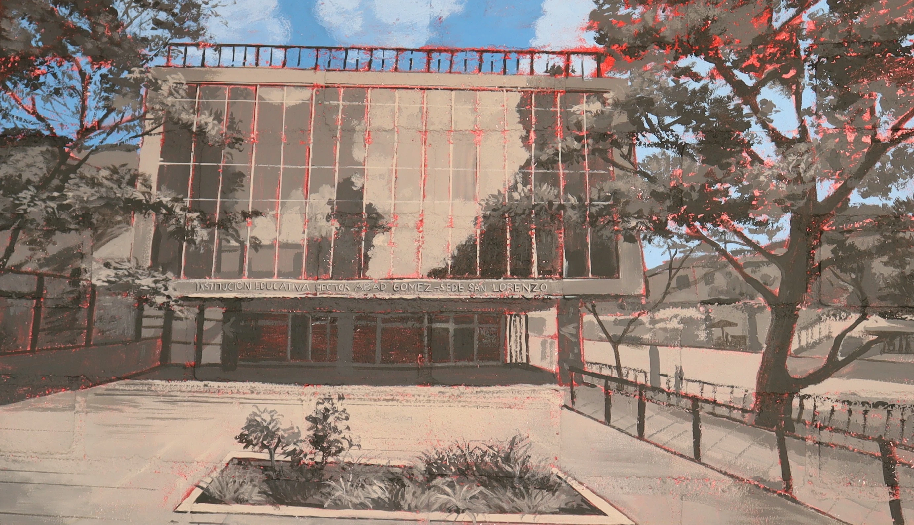
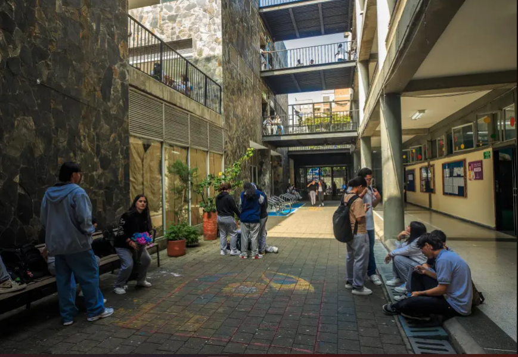
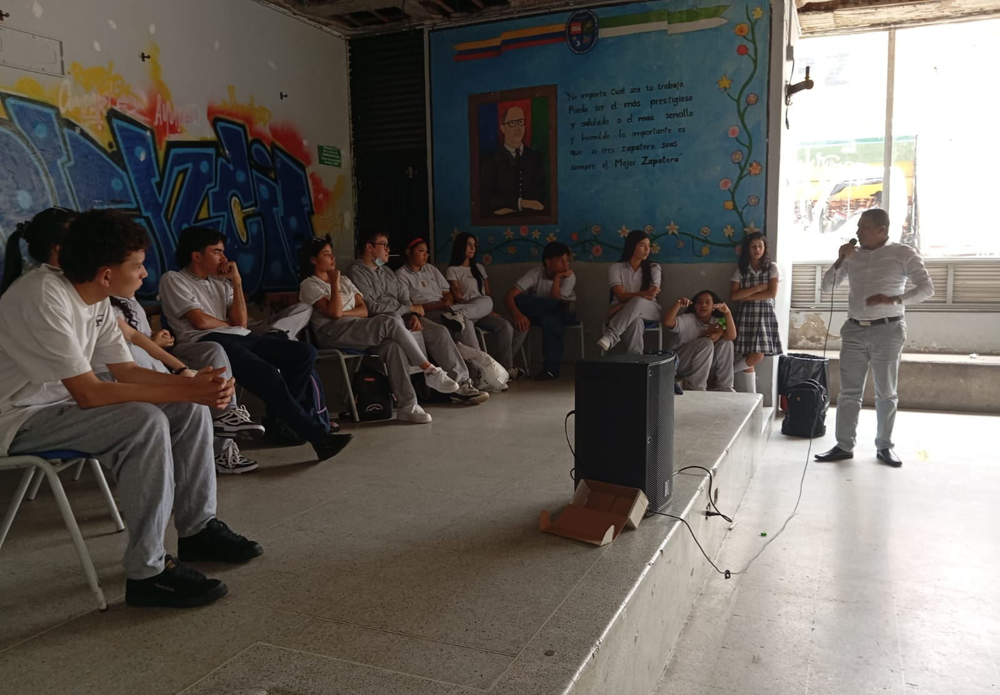
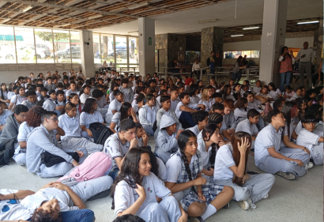
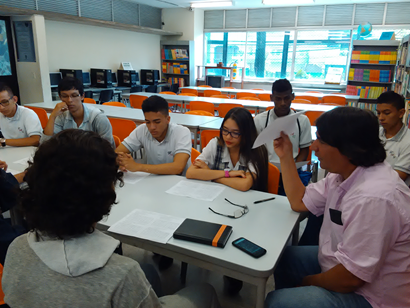
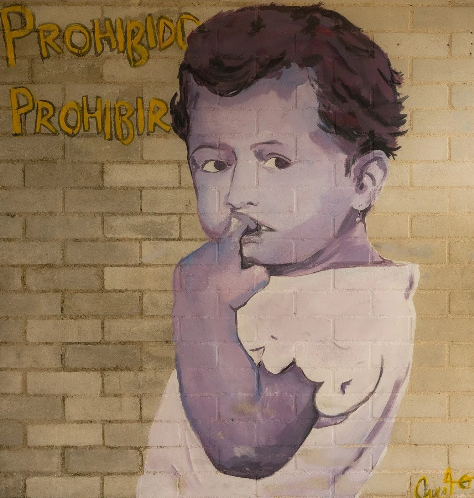
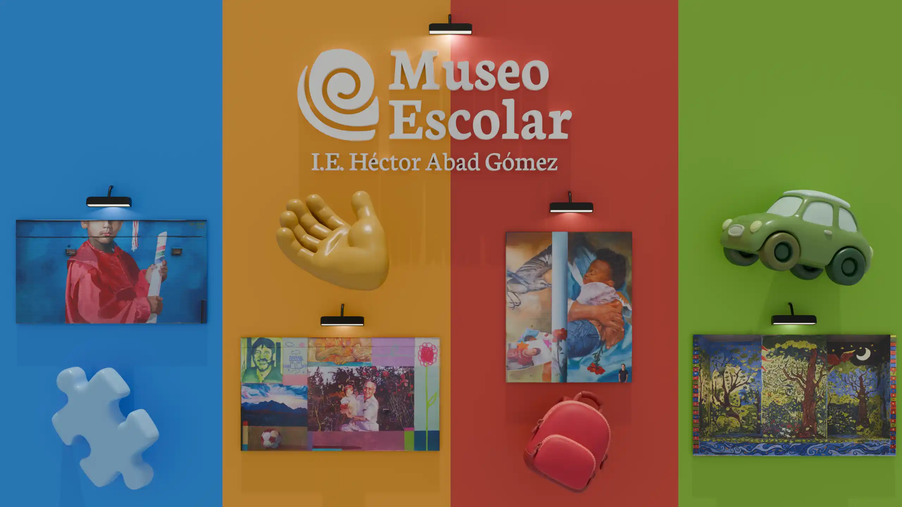

HISTORIA DEL COLEGIO
Historia del colegio
Un recorrido por los momentos y memorias que construyeron la identidad de la Institución Educativa Héctor Abad Gómez.
NIQUI DICE:
¡Aquí está la historia del colegio! desde nuestra visíon y misión, hasta los momentos más importantes para la institución! Haz clic en cada año para descubrir lo que ocurrió.
Nuestra Misión
Formar estudiantes integralmente para el desarrollo de capacidades socioemocionales, científicas, tecnológicas, artísticas y laborales, en el marco de los valores abadistas de justicia social, solidaridad y equidad, desde una perspectiva inclusiva, diversa e intercultural, que les permitan afrontar los desafíos de las nuevas ciudadanías en la configuración de sus proyectos de vida.
Nuestra Visión
Para el año 2030, la Institución Educativa Héctor Abad Gómez se consolidará como líder en educación inclusiva a nivel local, nacional e internacional, desde un enfoque intercultural, en perspectiva de los retos y desafíos del siglo XXI.
Línea de tiempo
Hitos que nos definieron
1962
Fundación
Se abre el centro educativo en el norte de Medellín con vocación comunitaria y humanista.

1975
Nueva Sede
Inauguración del edificio principal que aún hoy alberga la mayor parte de las jornadas escolares.

1989
En honor a Héctor Abad
La institución recibe el nombre del médico y humanista Héctor Abad Gómez tras su trágica muerte.

1998
Crecimiento comunitario
La matrícula supera los dos mil estudiantes. Referente del norte de Medellín.

2001
Nuevo Milenio
Consolidación de proyectos educativos y modernización de la infraestructura escolar.

2024
Los primeros murales
Con el objetivo de transformar los espacios escolares y plasmar nuestra identidad, se dio inicio a la intervención artística de la sede.

2026
Creación del Museo Virtual
Lanzamiento oficial de la plataforma digital interactiva, un espacio diseñado para preservar, organizar y compartir con el mundo entero la memoria colectiva, los relatos sonoros y la galería de nuestra comunidad educativa.
